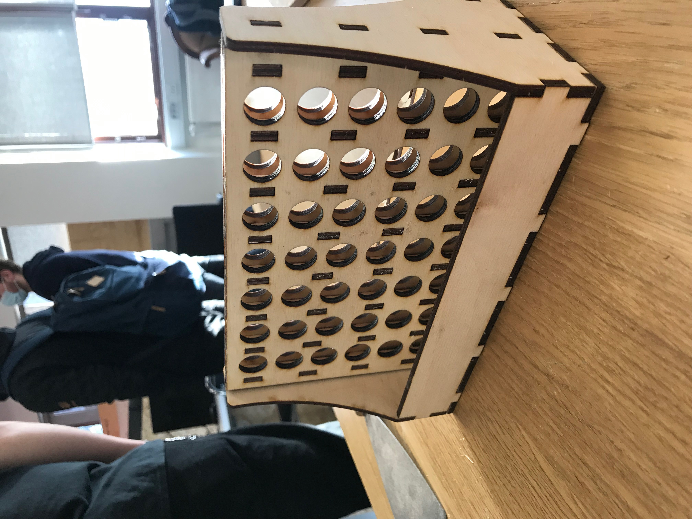
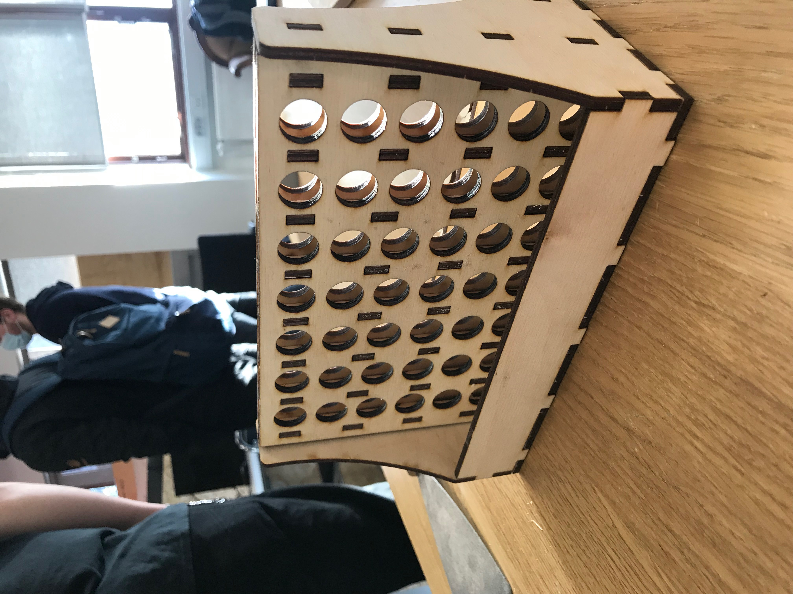

The purpose for this project was for students to get familiar with parametric design, learn how to use a lasercutter and see how kerf plays a big role in the design. I began this project by looking at what other people have done recently for laser cut pressfit projects witch plywood. I found some interesting projects on the famous board game 4 in a row which I used to play with my friends when I was young. So I started sketching how the project sould be.
I opened Atodesk Fusion 360 and started drawing the project. I first needed to add parameters for the project. Parametric design is an important feature when it comes to designing things and manufacturing. This allows the designer to change parameters and update automaticly the design. This saves alot of time and the designer does not need to change all the design by hand when something needs to be changed.
I wanted to have the design of the board game simple but cool. After some time sketching and resketching in Fusion the result was this design:
As can be seen the the holes of the plate needed to be isolated to all the other holes horizontally and the circlular plates that the player drops in the plate needed to stack up on each other and need to be seen throught the holes on the front and the back. The design gives the players the oppertunity to lift up the plate with the circular plates after the game is finished and then everything falls down to the open box at the bottom. I thought this was really smart way to solve the problem: how to get the circular plates out of the rectangular plate.
When prepairing for the laser cut I realised that I had done the design all wrong. I didn't design the project with any kerf. Kerf is the width of the lasercut and is really important feauture of press fit pojects. To read more about kerf I recomend this website.
If I had lasercut my project without counting for kerf the pressfit would not sitck together. I then decided to draw everything from schratch again. I created parameter named kerf and made the holes for pressfit one kerf smaller then the original hole as can seen on this photo.
The kerf calculation was done by me and Sverrir Kristinsson. We uploaded the calulations to his website. Here can see how we measured the kerf of the lasercutter.
After the design was ready I used Fusion to flatten out my 3D model. I followed this video; copied my components to another place in the model, moved and rotated them so they would lie down at the XY plane. I then moved them around in the plane so all the components would fit on 600x300mm plywood plate. I then created a new sketch and pressed create->project->project and then selected all the componnents I wanted to project on to my sketch. Then I saved my sketch as a DXF file and imported into Inkscape.
In Inkscape I saw that some lines that I created were splines and when saving as DXF file the splines didn't show up. So I used arc instead and it worked perfectly (I tried downloading some plug-in for fusion to save splines as DXF put it didn't work).
I needed to adjust the fill and stroke settings so I opened Fill and stroke, changed the stroke paint to red and change the stroke style width to 0.02 so the lasercutter could read the file. I then saved the file as pdf and the project was ready for laser cut!
I then went to Fablab Reykjavík to lasercut my project. I used Epilog Mini 24 lasercutter and followed this video to set up the cut. I needed to adjust the height of the focal point so the laser could cut throught the 4 mm plywood. These were the settings for the cut:
 It took 33 minuets to complete the cut. Then I took the plywood plate out of the machine and used knife to loosen out the plates that the machine had cut out.
I then pressed all the things together and sprayed 22 of the circular plates black so that the players would not play with the same color.
And my boardgame was ready!

It took 33 minuets to complete the cut. Then I took the plywood plate out of the machine and used knife to loosen out the plates that the machine had cut out.
I then pressed all the things together and sprayed 22 of the circular plates black so that the players would not play with the same color.
And my boardgame was ready!

laser cut projects, laser cut board game, four in a row, four in a row laser cut, parametric design, kerf, accounting for kerf, kerf calculations, inkscape, fusion, spline, dxf files, epilog laser, spline to DFX, prepair 3D model for laser cut.